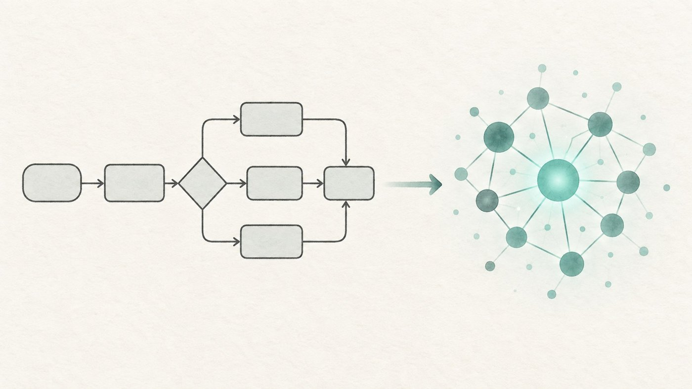

Bangalore, India
Suranjith Henry Karunakaran
Intelligent Automation & AI Transformation Consultant
I help BFSI teams find where automation and AI actually pay off, then take those ideas from process map to production. With 10+ years in BFSI behind me, my focus now is GenAI and agentic AI that business teams can trust and govern.

Proof, not promises
About
I am a Senior Associate Consultant at Infosys BPM in Bangalore. My work starts with the process: I run end-to-end assessments across BFSI domains to spot where IPA, RPA, GenAI and agentic AI can make a real difference.
From there I design the solution, build the business case, prototype it with the people who will use it, and work with architects and delivery teams to get it live. Along the way I manage and mentor teams, keep SLAs and KPIs on track, and write the proposals that get leadership to say yes.
I started in mortgage operations, which is where I learned how the work really gets done. That grounding still shapes how I approach every automation and AI project.
Areas of expertise
- Intelligent process automation
- RPA opportunity assessment
- AI use-case discovery
- Generative AI
- Agentic AI
- AS-IS / TO-BE design
- Business cases
- Control & governance design
- KPI governance
- Stakeholder management
The approach
Find the opportunity
Walk the process end to end and turn operational pain points into clear automation and AI candidates.
Make the case
Design the AS-IS and TO-BE, then tie scope to revenue, cost, productivity and operational KPIs.
Prototype early
Put a working concept in front of business users so they can check the workflow before build starts.
Take it to production
Bridge business requirements with architects and delivery teams, with control and governance designed in from day one.
Prototype early, govern from day one, ship to production.
Flagship project · Generative AI · Infosys BPM
AI-powered control testing tool
I designed and built a control testing tool powered by large language models, and took it from a consulting concept to a production-ready solution.
- Automates and streamlines control validation, cutting manual effort in control testing.
- Strengthens governance and process assurance with GenAI-driven automation.
- Earned multiple COO accolades for the initiative.
Experience
Senior Associate Consultant
- Lead end-to-end business process assessments across BFSI domains to find IPA, RPA, AI and wider transformation opportunities.
- Deliver automation across RPA, AI and agentic process automation: a 100+ FTE savings pipeline and 60+ FTE reductions implemented.
- Design AI-powered automation solutions and build business cases linked to revenue, cost, productivity and operational KPIs.
- Lead rapid prototyping so stakeholders can validate workflows early, then convert prototypes into production-ready solutions.
- Build scalability, control and governance into solution design.
- Manage and mentor teams on SLA adherence, KPI governance and delivery quality.
- Develop client-ready presentations and proposals that support executive buy-in and new business.
Earlier roles
Associate Consultant
Led process transformation engagements, designed TO-BE solutions and supported automation-led delivery.
Team Lead
Led process improvement and automation initiatives across productivity, team coordination and stakeholder alignment.
Process Specialist
Improved process efficiency, automated reporting and enabled KPI-driven decisions.
Senior Process Executive
Delivered process improvements in mortgage operations.
Business Development Executive
Supported business development and process transformation while improving client workflows.
Process Executive
Contributed to process improvement and quality in mortgage operations.
Skills and tools
- Automation
- Intelligent automation, RPA, agentic process automation, workflow automation
- AI
- Generative AI, agentic AI, prompt engineering, AI solution design, rapid prototyping
- Process
- Business process mapping, process mining, AS-IS / TO-BE design, process optimisation
- Business
- Business cases, stakeholder management, KPI governance, value-based delivery
- Tools
- Python, VS Code, GitHub Copilot
Certifications
Microsoft
Microsoft Certified: AI Transformation Leader
Exam AB-731
Credential ID 54013AA09AB835FF
Certification number F5T834-A189E3
Lean Six Sigma
Lean Six Sigma Green Belt
Process improvement and quality methods
Education
Bachelor of Science in Computer Science
MGR College, Periyar University · 2015
Let's connect
Happy to talk about AI transformation, intelligent automation and process consulting in BFSI.